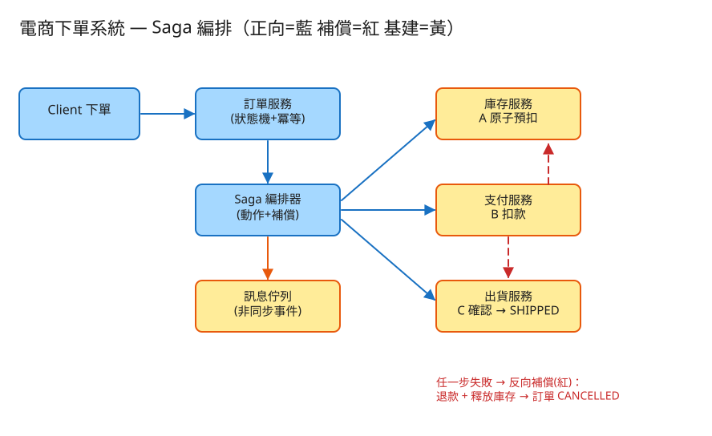

C 一致性/交易 建議 50 分鐘 Design an E-commerce Order System
CREATED → PAID → SHIPPED → DONE，異常則 CANCELLED；狀態只能合法轉移，不可跳級或倒退。| 指標 | 假設 | 推算 |
|---|---|---|
| 下單量 | 大型電商 | ~100 萬單/日 ≈ 平均 12 單/秒，促銷峰值 ×50 ≈ 600+ QPS |
| 讀寫比 | 查單/查物流頻繁 | 讀 ≫ 寫（查訂單狀態、物流追蹤）→ 讀走快取/讀副本 |
| 每單跨服務呼叫 | 庫存+支付+出貨 | 一筆下單 ≈ 3~5 次跨服務動作，失敗就要補償 |
| 訂單儲存 | 每筆 ~2KB，3 年 | 100萬×365×3×2KB ≈ 2 TB，需分庫分表（按 user_id / 時間） |
| 熱點 | 爆款商品庫存 | 單一 SKU 庫存熱 key，與秒殺同源，預扣需原子 |
# 1) 下單（核心，帶冪等鍵；觸發 saga 編排）
POST /api/v1/orders
Header: Idempotency-Key: <uuid>
Body: { "user": "u123", "items": [{ "sku": "sku-1", "qty": 1 }] }
→ 201 { "order_id": "ord_001", "state": "SHIPPED" } # 全流程成功
→ 200 (同 order_id) # 冪等：重送回原訂單
→ 409 { "state": "CANCELLED", "reason": "payment_declined" } # 失敗已補償回滾
# 2) 查訂單（含狀態與 saga 軌跡）
GET /api/v1/orders/{id} → { "state": "PAID", "saga": [...] }
# 3) 推進狀態（後台/出貨系統觸發，狀態機把關）
POST /api/v1/orders/{id}/transition Body: { "to": "DONE" }
→ 200 ok / 409 illegal_transition（非法轉移被拒）
# 4) 取消訂單（觸發補償）
POST /api/v1/orders/{id}/cancel → 退款 + 釋放庫存 → CANCELLEDorders（訂單主表）
order_id PK
user_id, amount
state ENUM(CREATED,PAID,SHIPPED,DONE,CANCELLED) -- 狀態機的當前狀態
created_at, updated_at
order_items（訂單明細）
order_id, sku, qty, unit_price
inventory（庫存；爆款是熱 key，真實放 Redis）
sku -> stock INT -- 原子條件預扣對象（UPDATE ... WHERE stock>=qty）
payments（支付流水）
payment_id PK, order_id, amount, status(CHARGED/REFUNDED)
idempotency（冪等鍵表）
idem_key PK -- 同鍵重送直接回原訂單
order_id, created_at
saga_log（編排狀態 / 步驟軌跡，崩潰後可續跑或補償）
order_id, step, action(forward/compensate), result, tssaga_log，
重啟後就能判斷「該往前續跑、還是該反向補償」。這是 Saga 可靠性的根基（與冪等表一起，讓重試安全）。

✏️ 用 Excalidraw 開啟編輯（diagram.excalidraw） Client 下單
│ 帶 Idempotency-Key
▼
訂單服務（狀態機 + 冪等）──建單 CREATED──▶ Saga 編排器
│ 依序發起 3 步正向動作
┌─────────────────────────────────────┼─────────────────────┐
▼ A 預扣庫存 ▼ B 扣款(→PAID) ▼ C 確認出貨(→SHIPPED)
庫存服務(原子預扣) 支付服務(扣款) 出貨服務(確認)
│ │ │
└──任一步失敗→反向補償(後進先出)：釋放庫存 ◀── 退款 ◀──────────┘
▼
訂單 CANCELLED（最終一致）
（服務間用訊息佇列做非同步事件驅動，補償亦由反向事件觸發）CREATED→{PAID,CANCELLED}、PAID→{SHIPPED,CANCELLED}、SHIPPED→{DONE,CANCELLED}，DONE/CANCELLED 為終態。DONE→PAID、CREATED→SHIPPED 跳級）一律拒絕。把無數 if/else 收斂成單一真相來源，杜絕資料錯亂。讀 stock → if>=qty → 扣 → 寫回，並發下兩請求同時讀到足量 → 超賣（經典 read-modify-write race）。UPDATE inventory SET stock=stock-qty WHERE sku=? AND stock>=qty，看 affected_rows；或 Redis Lua「判斷+扣」一次原子完成。下單入口先查冪等表：命中 → 直接回原訂單（不再跑 saga）；未命中 → 跑完 saga 後把 (idem_key→order_id) 寫入。
讓「重試/重送/前端重複點擊」天然安全，這是金流類系統的通用模式。
| 瓶頸 | 問題 | 對策 |
|---|---|---|
| 爆款庫存熱點 | 單一 SKU 預扣序列化成瓶頸 | 庫存分桶 sharding（同秒殺㉘）+ 快取扛讀；賣完跨桶借 |
| 訂單量 / 容量 | 單庫裝不下、寫壓力大 | 訂單分庫分表（按 user_id / 時間範圍），查單走讀副本/快取 |
| 跨服務一致 | 同步呼叫鏈長、易雪崩 | Saga + 訊息佇列非同步解耦；超時與重試 + 補償 |
| 編排器可靠性 | 編排到一半當機 | saga_log 落地 + 重啟後續跑/補償；步驟冪等消費 |
| 補償也失敗 | 退款/釋放庫存掛了 | 重試 + 退避；最終進人工介入佇列告警 |
本題 demo 著重於下單的真實核心邏輯（狀態機 + Saga 補償 + 冪等 + 原子預扣），可實際用 PHP 內建伺服器跑起來：
src/OrderStateMachine.php 訂單狀態機：合法轉移白名單，非法轉移一律拒絕。src/OrderSaga.php 核心：Saga 編排（3 步正向動作 + 反向補償）、庫存原子預扣（flock 包讀-改-寫，防超賣）、冪等下單。public/index.php 路由：下單看狀態流轉 / 注入失敗看補償回滾 / 冪等重送，並附互動測試頁。data/ 執行期狀態（庫存、錢包、訂單、冪等鍵），已 gitignore。# 啟動
cd demo
php -S localhost:8056 -t public
# 瀏覽器開 http://localhost:8056
# ① 正常下單 → 看 CREATED→PAID→SHIPPED，庫存/錢包扣減
# ② 注入付款失敗 → saga 反向補償（退款、釋放庫存）→ 訂單 CANCELLED，庫存/錢包原樣回復
# ③ 同 idem_key 重送 → 回原訂單，不重複扣flock 把整段 Saga 的「讀-改-寫」包成臨界區，模擬多服務的編排與最終一致結果——
不是真正的多服務、多訊息佇列（這部分是示意）。但訂單狀態機合法轉移、Saga 反向補償（退款 + 釋放庫存）、冪等下單、庫存原子預扣防超賣的邏輯都是真實可執行的：
注入失敗後庫存與錢包回到下單前數值、訂單轉 CANCELLED；同 idem_key 重送回原訂單不重複扣；非法狀態轉移被拒。
要換成真正的分散式 Saga，把各步驟改成對庫存/支付服務的呼叫、補償改成反向補償事件即可，編排與狀態機邏輯不變。